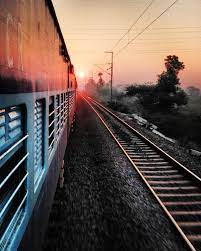
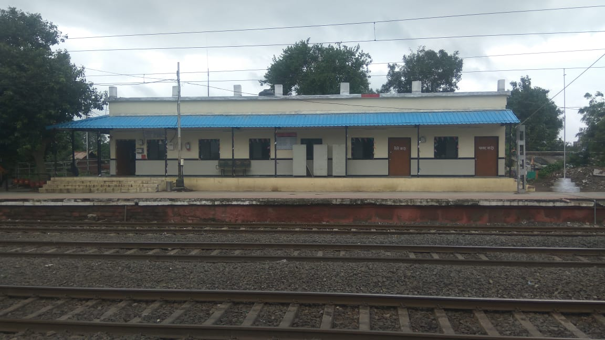
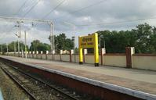

Railway-Station..



Bodwad
Indian Railways station
Indian Railways Suburban Railway Logo.svg
Location Bodwad, Maharashtra, Pincode 425310
Maharashtra India
Coordinates 20°54'14?N 76°01'01?E
Elevation 295 metres (968 ft)
Owned by Indian Railways
Operated by Central Railway
Platforms 2
Tracks 2
Construction
Parking Yes
Bicycle facilities Yes
Other information
Station code BDWD
Fare zone Bhusawal
History
Opened 1860[citation needed]
Electrified 1988–89
Previous names Great Indian Peninsula Railway
Location
Bodwad railway station is located in IndiaBodwad railway stationBodwad railway station
Location in Maharashtra
Show map of India
Show map of Maharashtra
Show all